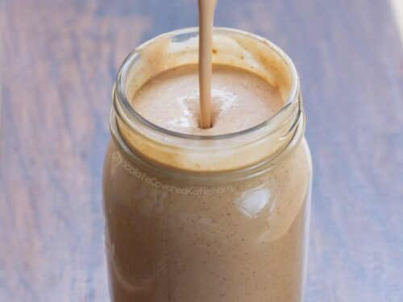

Milkshake

Description
A very nutritious and full protein milkshake that everyone can made at home. This is a healthy alternative if you want a sweet energy-full breakfast for you or your children, and the best of it is that is very quick and cheap!.
Ingredients
- 1 banana (Froze it in order to increase it sweetness)
- 1/3 cup of rolled oat
- 1 cup of milk
- 1 tsp of peanut butter
- 1 tsp of vanilla
- Cinnamon to taste
- Add the ingredients into the blender in the following order: liquids, powder and solids
- Blend in intervals of 30 seconds
- Pour in a cup and enjoy!
*This ingredients are equivalent to 1 portion